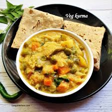

Veg Kurma

Veg Kurma is a flavorful and aromatic South Indian dish made with mixed vegetables cooked in a spiced coconut-based gravy. It's a perfect accompaniment to parathas, puris, or rice.
Ingredients:
- 2 cups mixed vegetables (carrots, beans, peas, potatoes), chopped
- 1 large onion, sliced
- 1 large tomato, chopped
- 1 tablespoon ginger-garlic paste
- 2 green chilies, slit
- 1 teaspoon garam masala
- 1/2 teaspoon turmeric powder
- 2 tablespoons oil
- 1/2 cup thick coconut milk
- 2 tablespoons fresh coriander leaves, chopped
- Salt to taste
For the Masala Paste:
- 3 tablespoons grated coconut
- 1 tablespoon roasted gram (chana dal)
- 1 teaspoon fennel seeds
- 2 cloves
- 1 small piece of cinnamon
- 2-3 cashews
Instructions:
- Blend the masala ingredients into a fine paste using a little water. Set aside.
- Heat oil in a pan. Sauté onions until golden brown. Add ginger-garlic paste and green chilies; cook until aromatic.
- Add chopped tomatoes and cook until they turn soft and mushy.
- Mix in turmeric powder, garam masala, and salt. Stir well.
- Add the mixed vegetables and cook for 5-7 minutes, stirring occasionally.
- Add the prepared masala paste and a cup of water. Cook until the vegetables are tender and the gravy thickens.
- Stir in coconut milk and simmer for 2-3 minutes. Do not boil.
- Garnish with chopped coriander leaves and serve hot.
Serving Suggestions:
Serve Veg Kurma with parathas, puris, or steamed rice for a wholesome meal 😊.